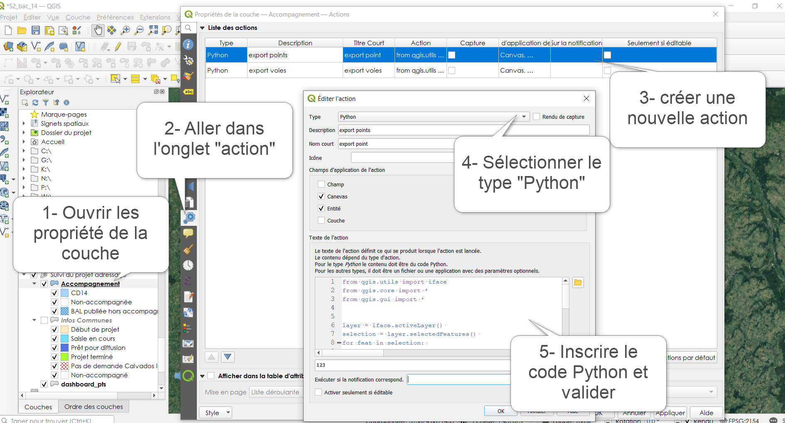
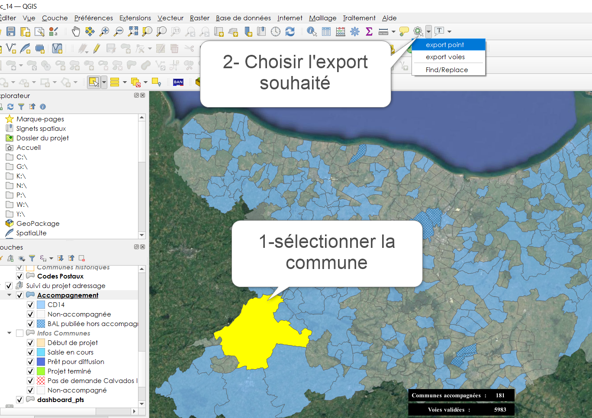

III- Consulter et exporter les données “Adresses” depuis QGIS
1- Outils d’export
1.1 Export BAL QGIS
Création d’une commande QGIS pour exporter les données points adresses et voies par commune avec un simple clik bouton.
Etape 1 : ouverture de la console action
Ouvrir la console « action » depuis les propriétés de la couche Commune (ici la couche Accompagnement alias du projet de la table adresse.commune).
Etape 2 : paramétrer l’action
Donner un nom à l’action et coller, paramétrer l’action et inscrire le code python dans la console.
Le code python pour l’export des points adresse est le suivant :
# importer les biblihotèques from qgis.utils import iface from qgis.core import * from qgis.gui import * layer = iface.activeLayer() # garde en memoire la couche active selection = layer.selectedFeatures() # garde en memoire les entités sélectionnées for feat in selection: # boucle sur les couches sélectionnées value = feat['Code INSEE'] # garde en memoire les valeurs du champs code insee for feat in selection: value2 = feat['Commune'] # garde en memoire les valeurs du champs commune cl = QgsProject.instance().mapLayersByName('v_export_pts')[0] # garde en memoire la couche dénommée iface.setActiveLayer(cl) # active la couche cl.selectByExpression( " \"Code INSEE\" = '{}' ".format(value), QgsVectorLayer.SetSelection) # séléctionne les entités dont le champs code INSEE est égal à la valeur du champs code insee de la première couche output_path = r'G:\DDTFE\ST\POLE_SIG\01_PROJETS_SIG\12_Adressage_BAN\02_PROJETS_COMMUNES\Export\export_points\%s_Export_points.csv' % value2 # definit le chemin d'export avec la variable value2 dans le nom QgsVectorFileWriter.writeAsVectorFormat(cl, output_path, "UTF-8", driverName="CSV", onlySelected=True) # Exporte les entité selectionnées iface.messageBar().pushMessage("Export réalisé avec succès vers G/POLE_SIG/12_Adressage_BAN/02_PROJETS_COMMUNES/Export")
Le code python pour l’export des voies est le suivant :
from qgis.utils import iface from qgis.core import * from qgis.gui import * layer = iface.activeLayer() selection = layer.selectedFeatures() for feat in selection: value = feat['Code INSEE'] for feat in selection: value2 = feat['Commune'] cl = QgsProject.instance().mapLayersByName('v_export_voies')[0] iface.setActiveLayer(cl) cl.selectByExpression( " \"Code INSEE\" = '{}' ".format(value), QgsVectorLayer.SetSelection) output_path = r'G:\DDTFE\ST\POLE_SIG\01_PROJETS_SIG\12_Adressage_BAN\02_PROJETS_COMMUNES\Export\export_voies\%s_Export_voies.csv' % value2 QgsVectorFileWriter.writeAsVectorFormat(cl, output_path, "UTF-8", driverName="CSV", onlySelected=True) iface.messageBar().pushMessage("Export réalisé avec succès vers G/POLE_SIG/12_Adressage_BAN/02_PROJETS_COMMUNES/Export")
Etape 3 : test exécution de l’action
Sélectionner la couche en entrée et la commune pour laquelle vous voulez réaliser l’export. Et utiliser la commande action.
Faire un clic droit sur la carte